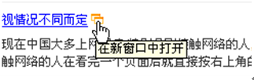

一，文件定义：
<!DOCTYPE html PUBLIC "-//W3C//DTD XHTML 1.0 Transitional//EN" "http://www.w3.org/TR/xhtml1/DTD/xhtml1-transitional.dtd"><html xmlns="http://www.w3.org/1999/xhtml">
（声明文档类型，告知浏览器文档使用哪种 HTML 或 XHTML 规范。）
二, <head> 区代码规范：
(1)<head> 区各种标签顺序：<head>
<meta http-equiv="Content-Type" content="text/html; charset=gb2312"/>（声明文档字符编码）
注：为了被浏览器正确解释和通过W3C代码校验，所有的XHTML文档都必须声明它们所使用的编码语言，根据需要定义，字符编码必须与网站实际编码相匹配，不清楚的跟程序沟通。
<title>文档标题</title>
注：title是HTML文档的必需元素，必须写在<head>中，如果<title>信息是动态绑定的也必须把<title>标签写在前台、里边的动态内容写在后台
<meta name="keywords" content="关键字" />（网页关键字）
注：搜索的时候优先，重要！该数据被搜索引擎编入索引
<meta name="description" content="文档描述" />（网页文档描述）
注：<meta name="description" content="" />文档描述内容如果是动态绑定的时候要去掉绑定内容中的标签
<link rel="icon" href="/favicon.ico" type="image/x-icon" />（网站图标显示在地址栏还有收藏夹）
<link rel="Shortcut Icon" href="favicon.ico" />（网站图标显示在地址栏还有收藏夹）
<link href="" rel="stylesheet" type="text/css" />（样式链接地址）
注： [1]rel和type是必需属性，必须填写
[2]样式文件规范：按照“文件架构”中的规范创建样式表
[3]把样式表置于顶部
</head>
三，标签使用规范
1，正确书写标签：[1] 所有元素及其属性名称必须用小写
[2] 属性值用双引号 “” 括起来
[3] 所有标签必须闭合，尤其要注意<img />标签、<input />标签、<br />标签
例如：<p>www.abc.cn</p>，不要少写了</p>
不要将<br/>误写成</br>或</b>
[4] 标签的必需属性不能丢，
例如：<img alt="">、<area alt="" />的必需属性为alt
<script>、<style>的必需属性为type
<textarea cols="20" rows="2" class="text"></textarea>,cols="20" rows="2"是必需值，文本域的宽高用样式来定义，但是这两个属性必须有而且不能为空；
[5] 给所有的属性赋值
不正确的写法：<input …… checked />
正确的写法为：<input …… checked= "checked"/>
[6] 明确指定图片的width和height。不仅对seo有用，对因各种原因无法显示图片的情况下，也能保持布局样式不变。
例如：<img height="60" width="760" src="images/logo.gif" alt="" />
[7] 特殊字符用编码标识
例如：“<”用“lt;”表示，“>”用“gt;”表示。
[8] 标签元素属性之间必须用空格隔开，
例如：<div class="" id=""></div>正确写法
<div class=""id=""></div>错误写法
2，正确使用标签：
[1] 标题：即正文标题一般用<h1></h1>标签，最好和title标签的内容有关联。
标题使用 <h1> 至 <h6> 标签进行定义，<h1> 定义正文的标题。<h6> 定义最小的标题。
<h1>只能出现一次，<h2>到<h6>可重复出现，但是如果出现次数太多会认为是作弊。
H标签的使用说明：
（H1-H6）标签是指网页html 中对文本标题所进行的着重强调的一种标签，以标签H1、H2、H3到H6依此显示重要性的递减，制作<h>标签的主要意义是告诉搜索引擎这个是一段文字的标题，起强调作用。
网站优化时怎么使用标题（H1-H6）标签？
h1一级标题
代表重中之重，它的地位在页面中跟关键字的地位一样重要。一般运用于网站标题或者头条新闻上，一些大型网站也运用在LOGO上，虽然h1代码可以写多个，但实际语义上有唯一性，h1标题在一个页面里面最好只出现1次或者没有。
【各大网站对于h1的用法都有所不同，对于h1放哪里？一直是一个争议的问题，但我认为到底放哪里没有绝对的答案。我认为应该根据网页的定位、类型、用户搜索习惯等因素综合考虑。比如新闻类的网站，可以把h1放在头条新闻上；综合门户类的网站，那就把h1放在LOGO上吧；如果公司网站也可以把h1放在LOGO上，因为用户搜索公司一般喜欢搜公司的名称；如果有网站宣传语，还可以把h1放在宣传语上，这也是不错的选择。总之，选择一种最适合的才是最好的。】
h2二级标题
主要出现在页面的主体内容的文章标题和栏目标题上，三列结构一般在中间，二列结构一般在重要的一边。可与h3搭配使用。【h2一般把它用在首页的大栏目上】
h3三级标题
一般主打页面的边侧栏。h4是它的辅助，出现频率不高。【h3多用于栏目标题】
页面层级关系不能太深，所以h4,h5,h6一般出现较少。
H标签学习网址： http://www.wzsky.net/html/162/110533.html
[2] 段落：段落使用 <p> 标签进行定义。
<p>This is a paragraph</p>
[3] table标签问题：涉及多行多列的特别是列宽有不固定的，坚决用表格，千万不要为了DIV而DIV，用一大陀CSS去模仿一个表格是很极端的行为。当然也有例外的，需要灵活处理，但千万别模仿什么表格。
[4] <strong>重点关键词强调</strong>这个标签基实重要性仅次于<h1>，一个页面出现一次就可以了，字体加粗用样式font-weight:bold;实现，也可以用<b></b>来实现。
[5]<em>斜体强调标签，用font-style来实现斜体样式
[6] <dl><dt><dd>是一个定义列表，成套使用
dl,dt,dd（一个定义列表） 这是一个很特别的三个标签的组合。这里的DT是指标题，DD是指内容。DL是包裹他们的容器。正确的写法 是<dl><dt> </dt><dd></dd></dl>在DL里可以有很多组的DT，DD，当出现很多组的时候尽量是一个DT配一个DD，如果DD中内容很多，可以在DD里加P标签配合使用。
<dl>(Definition List (定义列表))
<dt></dt>（Definition Term （定义项））
<dd></dd>（Definition Description （定义描述））
</dl>
[7] <ul><li>列表，成套使用
[8]不要使用已不被XHTML支持的元素
例如：<marquee><font>...
3，正确嵌套标签：
[1] 标签要按顺序合理嵌套，例如：<p><b></p></b>须修改为：<p><b></b></p>
[2] 级元素（<div>、<p>、<table>、<h>、<ul>、<dl>...）不能够嵌套在内联元素（<a>、<span>、<em>、<img>、<br/>、<input>、<select>...）中
[3] <div>里可以包含<p>，但是<p>里不允许包含<div>。类似的还有<ul>和<ol>里不允许包含<li>以外的标签；<table>里只能包含<caption><thead><tbody><tfoot><tr><td>标签
[4] <li>标签必须被<ul>或<ol>包裹,<dt>和<dd>必须被<dl>包裹
4，<body>为了保证浏览器的兼容性，必须设置页面背景<body style="background:#fff;"> （将样式写在css文件中）
5, html前台代码模块化，使用缩进（以tab键缩进，便于代码阅读修改）、并加明注释，严禁用ctrl+shift+f格式化页面（尤其是css文件）。
6，html注释
页面注释语句要写成：<!--注释-->
[1] 每一独立部分都要表明注释。例如：
<!--head-->
<!--left-->
<!--right-->
<!--foot-->
[2]注意是4个杠“-”，里边的文字可以是汉字也可以是英文，但是写成英文比较好，注释语言要用描述性语言简单明了，能够清楚的表达每一部分的意思，不可以太长、泛滥。
例如：不正确：<!---------------我的消息右边的留言板下面的留言回复部分----------------->（太长了）
正确：<!--留言回复-->
[3]不要在注释内容中使“--”
“--”只能发生在XHTML注释的开头和结束，也就是说，在内容中它们不再有效。
例如下面的代码是无效的:
<!--这里是注释-----------这里是注释-->
正确的应用等号或者空格替换内部的虚线。
<!--这里是注释============这里是注释-->
7, 用结构化的元素输出内容
例如：
<ul>
<li>新现代</li>
<li>新现代</li>
<li>新现代</li>
</ul>
这样做也便于后台代码规范
8，页面调用文件太大，尽量不要在首页调用太大的FLASH文件和视频文件。或Flash大的话就压缩一下。
9，统计代码加载慢：
把统计代码放到网站的最下面：不要和页面内容同在一个Table或者div标签里。可以在页面代码的最下方直接放置统计代码，或者在最下方单独做一个Table或者div来放置计数器。这样，在计数器不能访问的时候，你的网站速度也不会受到丝毫影响。
四, 网页中图片优化
1、前台页面调用的img图片[1]img一定要加alt属性，alt属性指定了当图片不能显示的时候就显示供替换文本。 内容最好与关键词相关。并指明img的width和height属性值，在图片加载不出来的时候保持布局不飞。
如：<img src="images/gxseo_logo.gif" width="100" height="80" alt="百万年薪"/>
[2] 图片大小的选用：
* 频道首页、正文页上等400*300像素左右的大图片，文件大小不应该超过120K byte。
* 频道首页上大小在100*50像素的小图片，文件大小不应该超过40K byte。
* 页面通栏的Banner图片，一般不超过150K byte。
* 不得将大尺寸图片（宽边超过1000像素）直接在页面上发布，而是应该提供较小的图片显示，并提供大图片的下载链接。
[3]图片格式选用：
JPEG：应用在允许轻微失真的像素色彩丰富的图片（照片）场合
GIF： Logo、小图标（Icon）、用于布局的图片（例如某个布局角落，边框等）、 仅包含不超过256种色彩的简单，小型图片场合
注：gif支持基本的透明特性，但在ie6中会有锯齿；gif支持动画特性
PNG：8位png的用途与gif基本相同
24位png图像能很好的显示透明效果（但ie6不支持，用其他方法解决）
注：在图片不失真的情况下选用最小的文件格式
[4]如果图片过多可以让加载时间延迟。（图片不多就不要用这种方法了）
[5]减少图片数：去除不必要的图片。
2、用作背景的小图片
[1]用作背景的小图标（例如：箭头，文章列表前的图标等）用.gif格式，将这些小图示做成一张图片，用CSS来定位。
(优点：A、图片档的总量会变小； B、利于下载，太多的小图片下载效果是不理想的，常常会发现这个图片出来，那个没出来，这样在写样式的时候只需要写一个总体的，对于具体的要显示的只需要标一个位置，非常省时间，样式也很精炼；C、 显而易见，这样做非常便于管理，替换或新增的时候工作量很小。)
[2]背景图片的优化
①切成所需要的图片，在1、[3]的基础上选择适当的图片格式导出切图
②压缩输出的图片，在不影响画面质量的前提下，尽可能的减少文件字节数。这个工作很重要，优化一张图片所带来的效果可能比优化很多的代码所带来的效果要明显得多。
③规划切出来的图片，哪些图应该被合并，存放于哪个目录等等。然后用css进行定位（要注意的是：要合理的规划图片，把图片大小、数量控制在一个合理的范围内）
3、图片命名规则
☆ 名称分为头尾两两部分，用下划线隔开。
☆ 头部分表示此图片的大类性质，例如广告、标志、菜单、按钮等等。
☆ 一般来说:
放置在页面顶部的广告、装饰图案等长方形的图片我们取名：banner
标志性的图片我们取名为：logo
在页面上位置不固定并且带有链接的小图片我们取名为but(button)
在页面上某一个位置连续出现，性质相同的链接栏目的图片我们取名：menu
装饰用的照片我们取名：pic
不带链接表示标题的图片我们取名：title
依照此原则类推。
☆ 尾部分用来表示图片的具体含义。
五, 清理垃圾代码
清理垃圾代码，是指删除页面中的冗余代码，可以删除80%的冗余代码，垃圾代码主要指那些删除了也不会对页面有任何影响的非必要代码。 下面是常见的垃圾代码：（1）空格
空格字符是网页中最常见的垃圾代码。但并不是指标签，而是有代码编辑环境下敲击空格所产生的符号，每个空格相当一个字符，那么也就是说，一个页面，空格就占页面体积的15%，100K的页面，有15K是空格字符。
空格字符最常出现 在代码的开始和结束处，还有就是空行中。
这些都是容易产生垃圾代码的地方。
（2）注释语句，注释语句表达清楚每个部分的意思就可以了，不用太长
（3）HTML标签的转换
这个主要就是使用短标签替换在网页中有同样效果的长标签，例如：,<b>与<strong>两者都是对字体加粗但是<strong>却比<b>多了5个字符。如果一个页面出现上百个加粗标签，就会产生不少的冗余代码。
六、链接打开方式规范
【1】在本页面打开的链接有：1、导航链接(这里的导航包括主导航，也包括次导航)
2、面包屑导航
3、tab条目链接
4、返回操作链接（任何页面进行返回操作都代表当前页面已经不需要了，典型点击logo返回首页）
5、翻页链接
6、表单 注册、登录、搜索都应该杜绝target=_blank。大量字段的数据表单提交有条很重要的可用性规范，点击返回应该能保留数据
7、特殊的网站地图、索引表也属于导航、不管是全局导航、局部导航、辅助导航、上下文导航，功能导航、还是友好导航都在本页面打开
【2】在新页面打开的链接有：
1、文章内容页面，文章列表（相关阅读，延伸阅读，推荐）
2、板块标题右面的更多
（图释）
3、文件下载链接
4、文件打印链接
5、非主线任务并打断进程的链接（需要前后对比的帮助，注册表单的**条款，版权声明）
6、跨域名链接（网志内嵌的关键词外部链接等）
7、跨应用平台链接
8、布局改变链接
（图释）
9、广告链接
10、提供帮助类的链接：（底部链接 如网站的简介、服务声明、网站导航页面）
【3】特殊链接：
1、社区发帖链接，如果发帖页面有返回按钮，则采用本页面打开，否则用新页面打开
2、申请职位，最好能使用弹出层方式或者在本页面打开
一些压缩代码的工具：
（CSS压缩减肥工具：http://www.xland.com.cn/css/geshihuacss.htm）
（JS压缩减肥工具：http://javascriptcompressor.com/）
（检测影响网站速度因素的工具：Yslow；使用方法：http://lusongsong.com/reed/362.html）
一些代码检测工具：
（HTML代码校验地址：http://validator.w3.org/）
（css代码校验地址：http://jigsaw.w3.org/css-validator/）